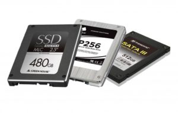

ВОССТАНОВЛЕНИЕ ДАННЫХ С SSD

Digital Data Recovery Lab занимается восстановление данных с 2011 года. Собственная лаборатория, большой склад донорских устройств и всё необходимое, для того, чтобы в кратчайшие сроки выполнить работы!
Мы осуществляем восстановление данных с SSD (Solid State Drive) дисков всех фирм производителей — Adata, Intel, OCZ, Corsair, Hynix, Plextor и других.
Сейчас всё чаще и чаще для хранения данных используют диски SSD. В этом, несомненно, большую роль играет цена, которая с каждым годом всё меньше. Конечно при пересчете за гигабайт полезного цена диска SSD значительно выше традиционных HDD, но за то такой диск даёт ряд неоспоримых преимуществ, таких как высокая скорость чтения\записи, отсутствие механических частей, что делает устройство более надежным по сравнению с традиционными HDD — для SSD диска падение в процессе работы менее критично (не стоит воспринимать это буквально и постоянно ронять диск — техника не любит такого обращения).
В основном SSD диски используются как основной системный диск, за его высокую скорость чтения. Но помимо преимуществ, у SSD дисков также есть один недостаток, который в значительной мере затрудняет его использование — это ограниченное количество циклов перезаписи. По простому говоря — Вы можете записать в одну ячейку информацию, строго определенное количество раз, к примеру, 1.5-3 тысячи раз. После этого ячейка перестаёт работать. Конечно контроллер диска старается равномерно распределять нагрузку по всем ячейкам диска, но это все равно не сделает диск долгожителем. Значительный недостаток в сравнении с традиционными жесткими дисками, количество циклов перезаписи у которых теоретически бесконечно.
Конечно, прогресс не стоит на месте и современные SSD накопители позволяют без проблемно работать на протяжении не только гарантийного срока, но и после него. На данный момент, накопители позволяют перезаписывать свой полный объём в сутки на протяжении всего срока эксплуатации. И это несомненно много.
Не смотря на конечный объём циклов перезаписи, самой частой проблемой является не деградация микросхем памяти, а повреждение контроллера или его прошивки.
Стоимость
#
Проблема
Стоимость, руб.
1
Логические неисправности (удалили, отформатировали, перестал определяться, файловая система RAW и т.п.):
от 3000 руб
2
Повреждена прошивка\служебная информация контроллера:
от 7000 руб
3
Неисправен контроллер:
от 12000 руб